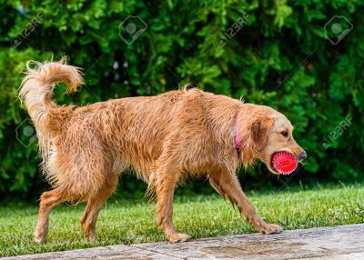
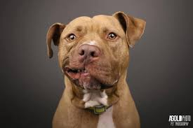
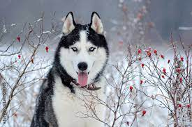
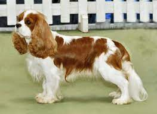
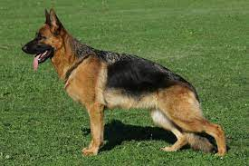
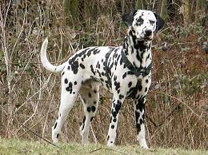

Pets
This is Buddy
| Name | Type of Pet | Fun Fact |
|---|---|---|
| Buddy | Golden Retriever | The Most Energetic |
Buddy is a wonderful Golden Retriever from Colorado! He loves hanging outside and playing fetch with his bright red ball
Buddy is 3 years old and has a wonderful family that throws his bright red ball around the yard
Fun Photo
Likes
- His bright red ball
- Hanging out outside
- Running around with his owners
This is Charlie
| Name | Type of Pet | Fun Fact |
|---|---|---|
| Charlie | Dachshund | Small and Cuddly |
Charlie is a small Dachshund that is from Michigan. She loves getting cuddles from her owners and enjoys sitting on the couch
Charlie is 6 years old and enjoys the winter months because of how beautiful it looks outdoors
Fun Photo
Likes
- Laying on the couch
- Loves to get cuddles from her mom
- Fascinated by white fluffy snow
This is Bruiser
| Name | Type of Pet | Fun Fact |
|---|---|---|
| Bruiser | Pit Bull | Very Lazy |
Bruiser is an lazy Pit Bull from New Mexico. Bruiser doesn't like to move around all that much. You can often find Bruiser sleeping in different parts of his owners home
Bruiser is 10 yeasr old and likes places that are comfortable enough for him to take a nap
Fun Photo
Likes
- Napping in the living room
- Napping in the kitchen
- Napping in the bedroom
This is Oscar
| Name | Type of Pet | Fun Fact |
|---|---|---|
| Oscar | Husky | Loves to Sing |
Oscar is a a Husky from Washington. Oscar loves to sing! Whenever there is music on in the house he loves to sing along, sometimes to his owners dismay
Oscar is a 2 year old husky who's favorite song is September by Earth Wind and Fire
Fun Photo
Likes
- Listening to musdic to sing along to
- Hanging out with dad
- Singing and Dancing when September is playing
This is Baxtor
| Name | Type of Pet | Fun Fact |
|---|---|---|
| Baxtor | Cavalier King Charles Spaniel | Loves to Play |
Baxtor is a Cavalier King Charles Spaniel from Texas. Baxtor enjoys playing indoors and outdoors when the weather is not too hot
Baxtor is 5 years old and only enjoys playing outside when it is below 75 degrees
Fun Photo
Likes
- Running and playing fetch with his mom but not with his dad
- Hnaging out under the tree in the backyard
- Picking up random sticks and bringing them as presents to mom
This is King

| Name | Type of Pet | Fun Fact |
|---|---|---|
| King | German Shepard | Endless Appetite |
King is a German Shepard from Oklahoma that enjoys eating anything in sight. King often chews up different items in the house in anticipation of his meals which makes his owners upset from time to time
King is 2 years old and will often bark at his parents whenever they are eating and ask for a bite
Fun Photo
Likes
- Eating Steak
- Barking whenever he smells food
- Raiding the pantry
This is Cookies

| Name | Type of Pet | Fun Fact |
|---|---|---|
| Cookies | Dalmatian | Loves to Lick |
Cookies is a dalmatian from Ohio that loves to lick anything in sight! You can often find him in the living room licking his favorite stuffed animal toy
Cookies is 4 years old and will often jump on new vistors to the house and lick their faces
Fun Photo
Likes
- Licking his favorite stuffed animal
- Licking his food bowl regardless whether there is food or not in it
- Licking new vistors when they come over to the house for the first time